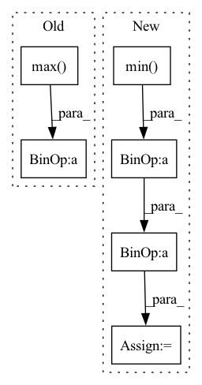

Pattern ID :13090
Before Change
PIL.Image
data = np.array(img.convert("LA"))
data = (data-data.min())/(data.max()- data.min())*255
if data[..., 0].mean() > 128:
gray = 255*(data[..., 0] < 128).astype(np.uint8) // To invert the text to white
else:After Change
invert = False // when text is inverted, make up inverse background pixels otherwise always 255
threshold = 128
data = np.array(img.convert("LA"))
grayscale = (data[..., 0]-data[..., 0].min()) / (data[..., 0].max()- data[..., 0].min() )*255
data = np.stack((grayscale, grayscale), axis=-1)
if data[..., 0].mean() > threshold:
// To invert the text to white
invert = TrueIn pattern: SUPERPATTERN
Frequency: 3
Non-data size: 6
Instances Fragment ID: 44189824
Project Name: lukas-blecher/latex-ocr
Commit Name: 07afa63594e3ecda5541065ef3e72a9b469b7bd2
Time: 2022-04-02
Author: 35098797+TITC@users.noreply.github.com
File Name: utils/utils.py
M Class Name: AnonimousClass
N Class Name: AnonimousClass
M Method Name: pad(2)
N Method Name: pad(2)
M Parent Class:
N Parent Class:
M File Name: utils/utils.py
N File Name: utils/utils.py
M Start Line: 83
M End Line: 103
N Start Line: 83
N End Line: 109
Before Change
// target = target.clone()
print(target.shape, prediction.shape)
mask = target > 0
target[mask] = (target[mask] - target[mask].min()) / (target[mask].max() - target[mask].min()) * 9 + 1
//target[mask] = 10. / target[mask]
target[~mask] = 0.
After Change
//mask2 = prediction > 0
// print(mask2.type(torch.float32).mean())
prediction = (prediction - prediction.min() ) / (prediction.max() - prediction.min() + 1e-8)
//prediction[mask2] = 10. / prediction[mask2]
//prediction[~mask2] = 0.
Fragment ID: 44189792
Project Name: antocad/focusondepth
Commit Name: 6c33c5957c996f4015e46dd90048624e1b019574
Time: 2021-12-30
Author: antoine.cadiou@icloud.com
File Name: FOD/Loss.py
M Class Name: ScaleAndShiftInvariantLoss
N Class Name: ScaleAndShiftInvariantLoss
M Method Name: forward(3)
N Method Name: forward(4)
M Parent Class: nn.Module
N Parent Class: nn.Module
M File Name: FOD/Loss.py
N File Name: FOD/Loss.py
M Start Line: 125
M End Line: 148
N Start Line: 136
N End Line: 136
Before Change
// reindex adata1 and adata2 by matching then calculate the pairwise euclidean distance
if abs(adata1.obsm[spatial_key].max()) > 1 or abs(adata1.obsm[spatial_key].min()) > 1:
adata1.obsm["scale_spatial"] = adata1.obsm[spatial_key]/ adata1.obsm[spatial_key].max()
if abs(adata2.obsm[spatial_key].max()) > 1 or abs(adata2.obsm[spatial_key].min()) > 1:
adata2.obsm["scale_spatial"] = adata2.obsm[spatial_key]/adata2.obsm[spatial_key].max()
spatial_key = "scale_spatial"
coord1 = adata1.obsm[spatial_key][matching[1,:]]After Change
for adata in [adata1, adata2]:
coord = adata.obsm[spatial_key]
if abs(coord.ptp()) > 1 or abs(coord.max()) > 1:
adata.obsm["scale_spatial"] = (coord - coord.min( 0) )/ coord.ptp(0)
else:
adata.obsm["scale_spatial"] = coord
coord1 = adata1.obsm["scale_spatial"][matching[1,:]] Fragment ID: 44189834
Project Name: gao-lab/slat
Commit Name: 7cdf361c26cbdb2ff6bcb4a29245fc7d6f06001c
Time: 2023-04-17
Author: xiachenrui@mail.cbi.pku.edu.cn
File Name: scSLAT/metrics.py
M Class Name: AnonimousClass
N Class Name: AnonimousClass
M Method Name: euclidean_dis(4)
N Method Name: euclidean_dis(4)
M Parent Class:
N Parent Class:
M File Name: scSLAT/metrics.py
N File Name: scSLAT/metrics.py
M Start Line: 218
M End Line: 224
N Start Line: 218
N End Line: 225